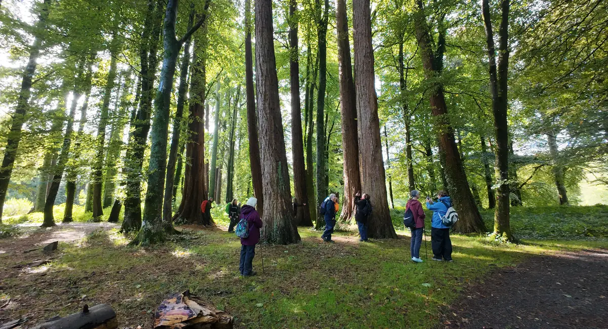
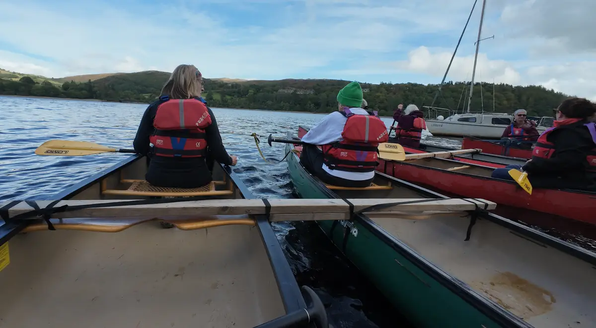
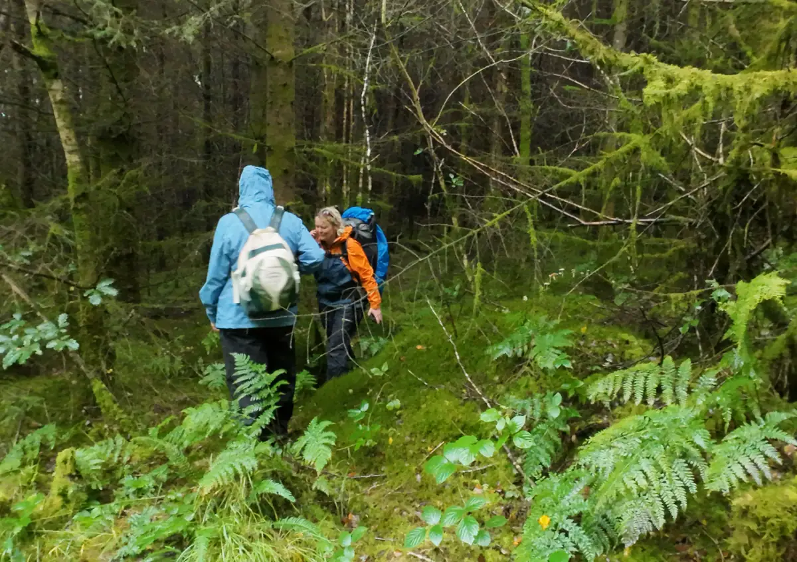
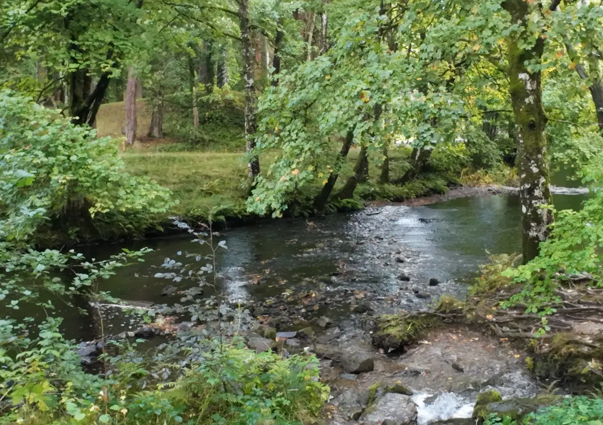
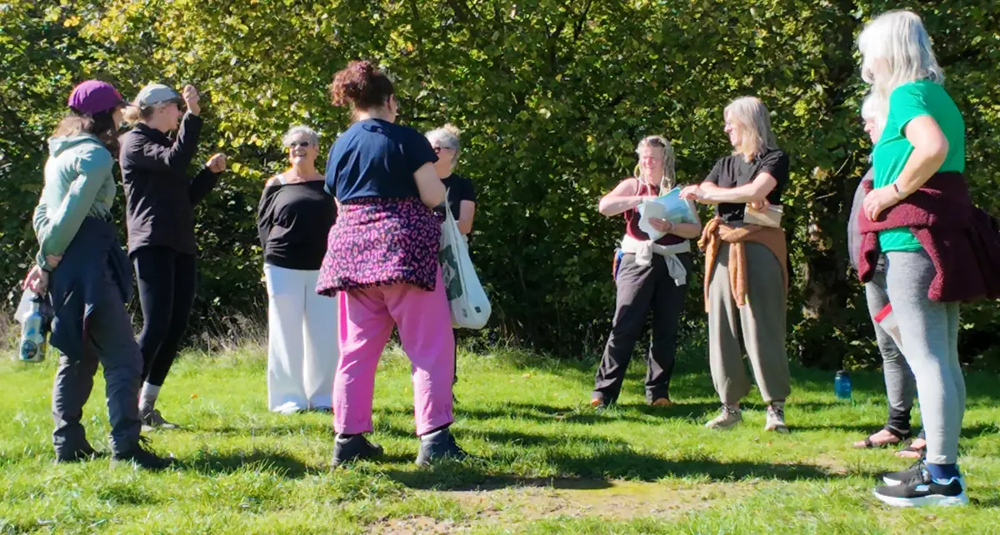
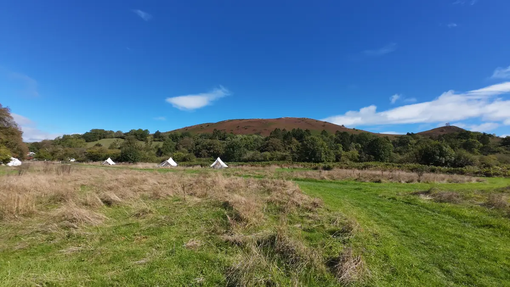

A space for women to explore, connect and play through adventure, nature and water. Small, women-only weekends in Eryri and Mid Wales, guided by Bex and Emma.
This is an invitation to step away from the everyday. To get outside, reconnect with nature, try new things, spend time with like-minded women and perhaps reconnect with parts of yourself that don’t always get much space in everyday life.
Over a weekend we’ll be moving, exploring and connecting with the natural world, alongside plenty of time to slow down, rest and enjoy each other’s company.

Among the giant redwoods, September 2026
This might be for you if…
You can’t remember the last time you had a weekend that was just for you.
You’ve always wanted to try wild swimming, canoeing or sleeping outside, but not on your own.
You love the outdoors but rarely get the time, or the company, to really be in it.
Life has been full, or hard, and you need space to breathe and think.
You’d like to meet women who want the same things you do.
You’re tired of being the one who organises everything, and would like someone else to take care of it.
You don’t need to be outdoorsy, sporty or confident. You just need to want to come.
Every weekend has two halves
Getting out
Hiking through Eryri and the hills of Mid Wales
Open water wild swimming in lakes and rivers
Canoeing
Fire-making and camp craft
Bespoke bushcraft workshops
A night sleeping under the stars
Slowing down
Local, home-cooked food, eaten together (and cake)
Wood-fired saunas
Gentle morning movement and mindfulness in nature
Journalling among the bluebells
Evenings around the campfire
Downtime with a book or your knitting
Stories and local knowledge from your guides
A weekend with us
This is how one of our retreats, Explore the Elements, unfolded around Lake Vyrnwy and the hills of Powys. Every retreat is different, but this gives you a feel for the pace and the shape of things.
Friday Arriving and settling in
We pick you up and drive you to the bunkhouse, with views across the lake. There’s time to unwind and settle in before we get to know each other over a hearty home-cooked dinner. We light the fire, listen to it crackle, and get a good night’s rest.
Saturday On the water
A gentle start with guided morning movement, then down to the lake and out in canoes. We stop for a packed lunch and try some bushcraft skills before wandering back for downtime. After dinner there’s the sunset, and a fire to share intentions and reflections before bed.

Sunday Into the hills
We walk slowly into the hills, carrying just a day bag while the heavy luggage goes ahead. We find a stream to dunk in, with a hot drink afterwards, then carry on to our camp for the night. Beds made, a hot meal shared, and we fall asleep to the sound of owls.

Monday River and sauna
Breakfast outside, a fresh dip in the river, then warming up in a wood-fired riverside sauna. We close with a gratitude ceremony and a last lunch together, and everyone heads home with stories to tell and new friends made.

Come on your own. Most people do.
Most women on our retreats book entirely solo. There’s no pressure and no experience needed. The weekend is built to help friendships form quickly around the campfire, without cliques or anything intimidating.
We aim to keep every retreat to no more than 12 women so we can get to know you properly, look after you well, and make sure everyone feels safe, supported and part of the group.

Within 24 hours I could feel every part of me relax. Whatever it was, it worked. My cup is full.
Who runs it
Bex and Emma, experienced outdoor guides who founded Wild Flow. We’re an independent, female-founded small business.
How long
Most retreats are a weekend, Friday to Sunday. Some run longer, like our four-day Explore the Elements.
Where
Eryri National Park (Snowdonia) and Mid Wales, with more places to come.
Group size
No more than 12 women per retreat.
Pace
A comfortable pace, no pressure, and a healthy level of challenge.
I cannot express how happy I feel and what an amazing weekend I have had.
Tracy, Wild Women Weekend
Meet Bex and Emma
We work together because we’re on the same page about making adventure inclusive for women. You’ll be with us from the first dinner to the last goodbye.
Bex
Bex moved to North Wales from Kent for the mountains and has been leading groups outdoors for over twelve years, on foot, by boat and by bike. She’s a qualified Mountain Leader and Open Water Lifeguard, and gives her time as a retained firefighter at her local station.
Expect games, good veggie food and plenty of fun. When the weather allows, she’s out walking, swimming, or learning to surf in Morocco.
Emma
Emma has worked in the outdoors her whole life, guiding adults and young people on adventures across the globe and here in the UK. She’s passionate about removing barriers so that everyone can get outside and feel the benefits.
Water is her thing: swimming, paddling, or watching waves crash. She’s also fascinated by fungi and will happily stop to show you a new one.
Adventure is for everyone
Places can be secured with a 20% deposit. We believe every woman can benefit from getting outside. Adventure shouldn’t be restricted by income. Send us a message to find out more.
Questions you might have
If yours isn’t here, message us. We’re happy to chat before you decide anything.
I’ve never done anything like this. Is that OK?
Yes. Many women come having never been wild swimming, paddled a canoe or slept outside. Bex and Emma are experienced outdoor guides and will show you everything you need, at your own pace.
How fit do I need to be?
Plenty of women worry about this, and the answer is: you’re fit enough. We go at a comfortable pace with no pressure, and a healthy level of challenge. If you have any worries about your fitness or health, talk to us before you book.
Is it safe?
Safety is always key. Bex is a qualified Mountain Leader and Open Water Lifeguard, and Emma has guided groups in the outdoors her whole career. We choose swim spots with care and keep groups small so we can look after everyone.
What if I can’t afford it?
We offer reduced and fully funded places. Message us and we’ll talk it through.
Do I have to swim in cold water?
No. Everything is an invitation, never an expectation. Dip a toe, go all in, or stay on the bank with a hot drink. There’s zero pressure.
I’m coming on my own. Will I fit in?
Most women book solo, so you’ll be in good company. The weekend is designed so that friendships form naturally, from the first dinner to the last campfire.
Where will I sleep?
It depends on the retreat. On our last one we spent two nights in a cosy bunkhouse and one night sleeping out under the stars in a bivvy bag, which we provide.
Do I need special kit?
Mostly things you already own: walking boots, waterproofs, warm layers and swimwear. We send a full kit list when you book, and if you’re missing anything, get in touch. We probably have a spare.
What’s the food like?
Local, hearty and home-cooked, and eaten together. Let us know about any dietary needs when you get in touch.

Register your interest
We’re planning our next retreats in Eryri and Mid Wales. With no more than 12 places on each, the women who register first hear first. Send us a message to go on the list, or just to ask a question.